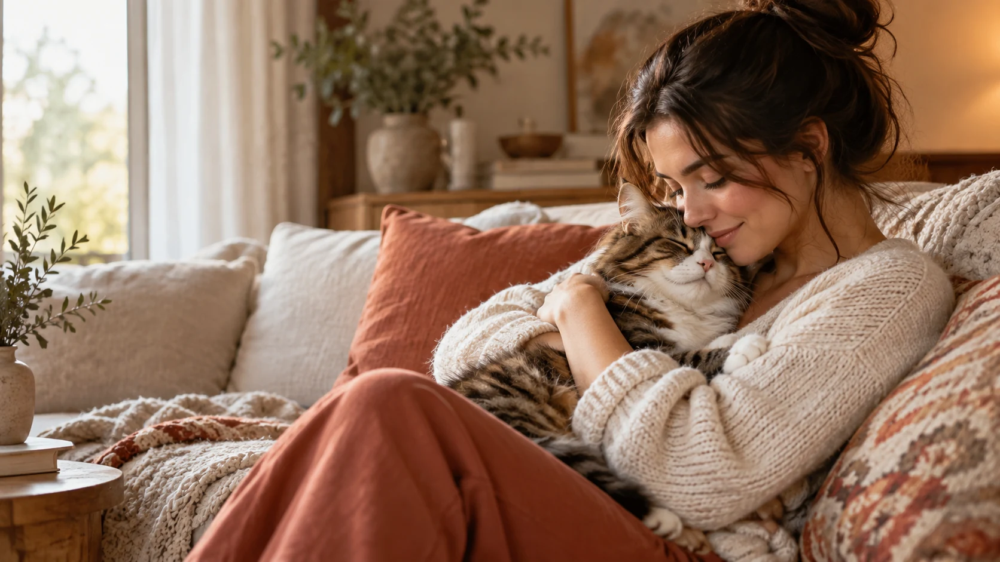
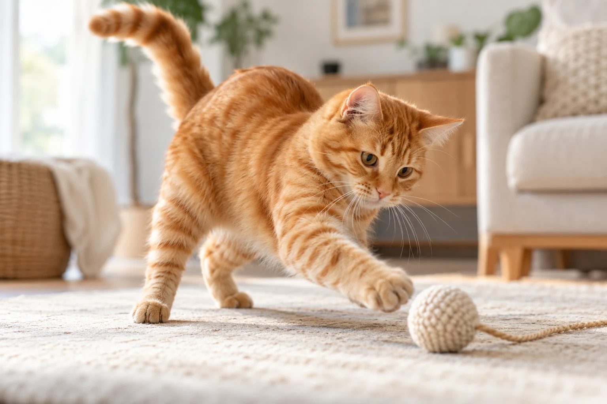

Curiosidade
Todo cantinho pode revelar uma nova descoberta.
Um cantinho para quem ama de verdade
Viver com um gato é colecionar miados, pelos na roupa e momentos que fazem qualquer dia ficar mais bonito.
Explorar nosso cantinho
Uma conexão especial
Entre uma soneca no sofá e um olhar curioso pela casa, os gatos ensinam que carinho também mora nos pequenos gestos. Este é um espaço para celebrar essa amizade cheia de personalidade, respeito e muito amor.

Um pouco do universo felino
Curiosidade, energia e descanso fazem parte de cada rotina compartilhada.
Todo cantinho pode revelar uma nova descoberta.

Um instante de diversão transforma o dia.

Depois da aventura, sempre existe um lugar para relaxar.
Ferramentas para o dia a dia
Escolha uma ferramenta e encontre uma forma simples de celebrar a vida com seu gato.
01 / Cuidado
Crie uma ficha carinhosa com as informações do seu companheiro.
Conhecer o perfil02 / Rotina
Organize tarefas de cuidado e acompanhe o que já foi feito.
Abrir a agenda03 / Descobertas
Calcule uma estimativa educativa da idade do seu gato em anos humanos.
Calcular idade04 / Diversão
Responda perguntas leves e descubra seu jeito de cuidar de um gato.
Fazer o quiz05 / Inspiração
Encontre ideias simples e guarde suas dicas favoritas no navegador.
Ver dicas06 / Memórias
Registre acontecimentos e observações importantes da rotina do seu gato.
Abrir o diário07 / Segurança
Exporte ou restaure seus dados locais com segurança e privacidade.
Gerenciar dados